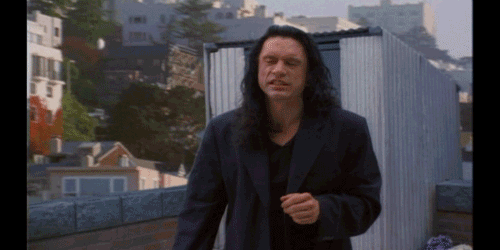

Личная страница потенциальной исследовательницы

Несколько слов обо мне
ФИО: Кравченко Юлия Сергеевна
Место учебы: 1 курс бакалавриата НИУ ВШЭ ФГН ОП "Филология"
Научные интересы: женская проза XIX и XX веков
Немного о себе: жду торжества метамодерна
me, waiting for metamodernism to come
Как современные технологии могут помочь филологу
В современном мире наука не может обойтись без цифровых технологий. Гуманитарные науки, например, филология, не являются исключением. Онлайн-библиотеки и онлайн-переводчики, электронные словари и корпусы (НКРЯ и др.) стали незаменимыми инструментами для каждого филолога. Одной из самых необходимых программ для исследователя литературы я считаю программу для оцифровки текстов. Эти программы не только делают проще работу с текстами, но и позволяют популяризовать произведения, существовавшие только в печатном виде.
me, using digital technologies
Что-то не так с НКРЯ
Достоинства
Главным достоинством НКРЯ является его существование.
Единый стиль: фон и шрифты везде одинаковые. Еще один балл в пользу НКРЯ!
"Читаемый" стиль: цвета фона и шрифта, а также сам шрифт подобраны так, что можно читать без страха потерять зрение. НКРЯ получает третий балл (из десяти)!
Недостатки
Главная страница: человек, незнакомый с НКРЯ, зайдет на сайт, увидит новости, испугается и закроет сайт. Не надо так :(
Непонятность: пользователь должен без всяких инструкций понимать, как пользоваться сайтом. НКРЯ хочет быть исключением :(

we need to talk about НКРЯ